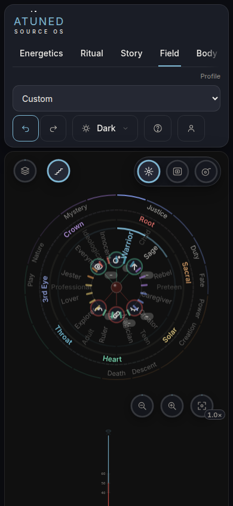
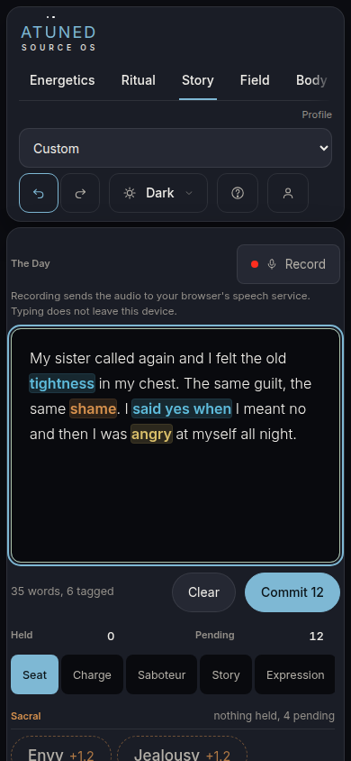
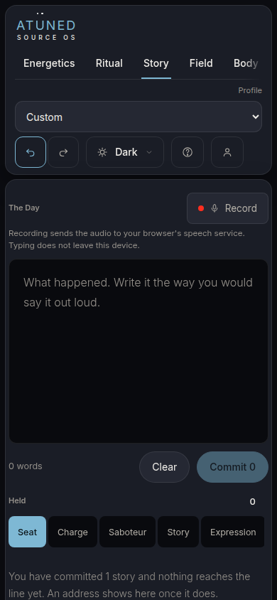
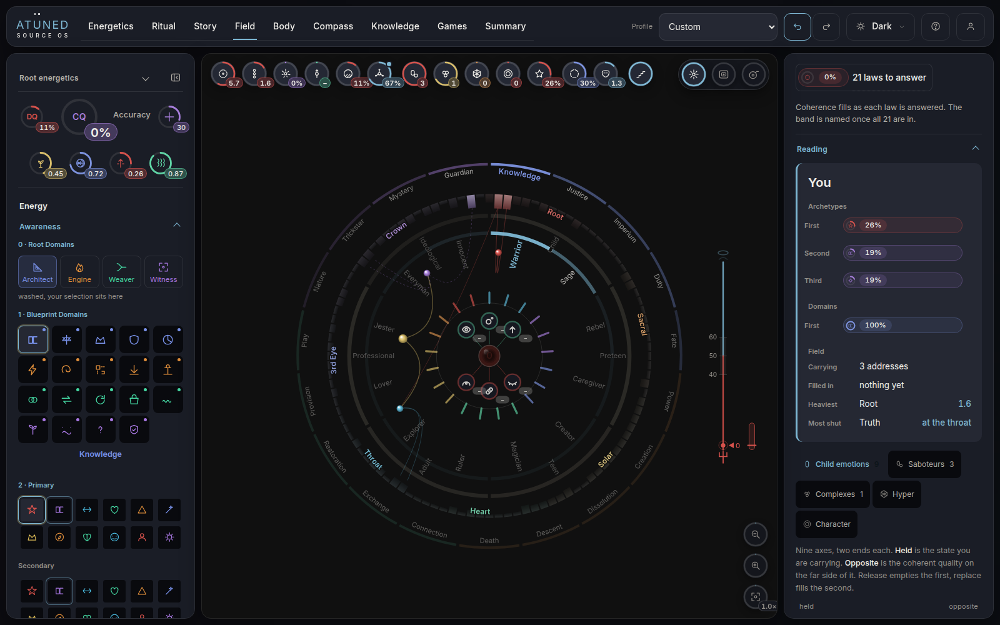
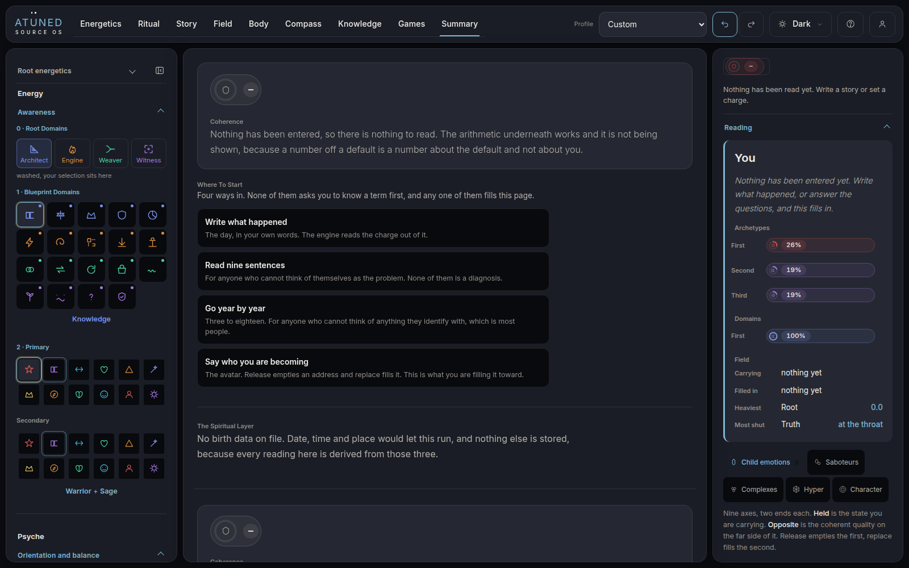
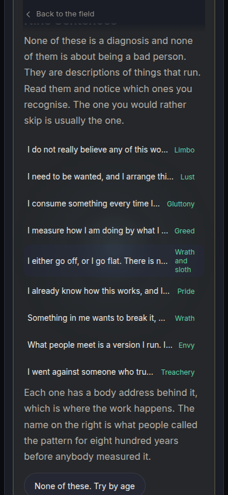

This page is a prototype storyboard. It is not Atuned and nothing on it is wired to Atuned. The drawn screens carry no real tab names for that reason. The only real product on this page is the set of screenshots under "What running it showed", each labelled as the shipped build.
Every frame a brand new person meets, in order, drawn at phone width. The seven colour ring the boot ends on is still the only progress object. What changed: the four stations of the loop are no longer four cards to read. A person does each one once, in the real product, and arrives on the Field with a closed circle they made. The specification is DESIGN-firstrun.md section 0, and the evidence is RESEARCH-firstrun.md.
Kept exactly: the ring, the "Hello, Sofia." check in as drawn, the signal test, and the loop's four words, discover, play, flow, embody, used as the station names and never relabelled as a tool or a tab.
Example name: Sofia Alarcon, a reference profile in the product. The story text on the discover frame is the one written for Angela in the simulation. Every line of copy passed the voice gate and still owes the voice seat's ten passes.
Commit acc8181, built fresh, real Chromium, a new browser for every walk. These are screenshots of the shipped app, not drawings. What each person thinks is simulated; what the screen showed them is measured.






A drawing of the account area, not wired. The group already exists with one control. It gains a switch, the action is renamed, and the foot line is corrected, because the opening now keeps a name and a first story.
| Route | Where | What happens | Opening after |
|---|---|---|---|
| Any press | Boot | Skips the boot only, as today | unchanged |
| Box ticked, Next | Hello | Name written, straight to the Field | off |
| Leave | Signal test, any station | Straight to the Field. Quarters already done stay closed on the ring. "The opening is in Account." | off |
| Save on the When row | embody | The ring closes onto the Field | off |
| Tab closed mid run | Anywhere | Next launch greets by name and resumes after the last closed quarter | still on |
Q6, which four surfaces the stations are, is retired: you answered it, "It's discover play flow embody." The new questions come first; Q1 and Q2 are unchanged and keep their drawings.
20 September: "No pop ups. One screen, not a sheet over the product." The first turn happens in the real surfaces, with everything but one target dimmed.
As storyboarded. No sheet and nothing drawn over the product; the product is the screen. The person touches the real places, which is the navigation tutorial. Costs a spotlight state on four surfaces.
Your 20 September rule to the letter. Costs the tour of the software: the person never touches the real places until the opening ends.
Measured on the build: on a first story the release says "Nothing is held above the line yet, so there is nothing to release."
As storyboarded. The circle closes on day one. Writes nothing. Costs a practice mode on the release.
The third quarter stays open until something crosses the line, usually the second story. Costs the closed circle on day one, and makes day two the day the loop first closes.
"Maybe we can ask them a few more questions that kind of turn on, like not turn on, but activates the expression, activates certain aspects of the diagnostic. I don't know, maybe we don't do that."
Not recommended, not built. The research cuts both ways: Headspace roughly doubled course starts by asking a few questions even when the answer changed nothing, and active practice did not rise.
The name stays the only question, and it already writes three real numbers.
Three questions, the smallest set the engine can read a spread from, so one spoke is real on day one. Costs about 40 seconds and a questionnaire in the opening.
Raises starts, per Headspace. The one version the house voice cannot allow: a question that pretends to personalise is a claim the instrument cannot back.
20 September: "At no point are we talking about results or purpose." 26 September: "Highest purpose of the product results."
| Station | A. What to do, as storyboarded | B. Plus what it is for, one more line |
|---|---|---|
| discover | Write one thing from this week that is still on you. | It finds your story and the place in the body where it lives. |
| play | Your words landed here. Open one. | It finds what that story is wired to, and what it costs you over time. |
| flow | Run one release over it. Follow each line in thought. | Release takes the charge off, one address at a time. |
| embody | Pick when you will come back to it. | The ritual holds the change, one day at a time. |
Column A names an act and lets the screen show the result, which may settle this by showing instead of saying. Column B is your 26 September material, shaped once, and anything claiming healing goes through the refusal gate before it ships.
"Do you want to check this box so you don't have to see this again?"
As storyboarded. Ticked, the person goes straight in now and on every later launch, until the switch in Account says otherwise. Costs the greeting by name on later launches.
"Hello, Sofia." after every boot until the box is ticked; the turn is one time on its own. Costs one press on every launch for everyone who never finds the box.
"If we can get that lined up with the start, the starting square, that'd be cool. It also needs to have a loading screen in between." FA confirmed "the square" is Frames.
The first run lands on the Field drawn as nested frames. Later launches keep whatever view the person last chose. Costs porting the Frames arrival, which is not built yet, and its own checks.
"Starting square" read as square one. The Field opens as it does today. Costs nothing to build, and misses you if you meant the square.
Q4. Is the name required? Optional loses the greeting and three numbers for whoever skips it. Required loses Diane and James at an ask placed before a payoff.
Q5, revised. The first story is real. The opening now runs through the door: the story is the person's own and carries undo; only the release in flow is practice. The other answer keeps the story as practice too, and loses their own sentence becoming their own field.
Q7. May the opening keep the two marks from the signal test? Kept, a replay can show whether the shape moved. Kept nothing, the signal test has no memory.
Q8. Does Root energetics open on the first landing? Open once, the person lands on three numbers that are theirs; closed, as ruled.
Q12. Say that the fourteen people in the profile picker are worked examples? Today it reads "Custom" above "Sofia, 41, somatic practitioner" and thirteen more, and a stranger reads them as other people's data. One word, "Examples", or leave it.
Read through search summaries on 26 September; the page fetcher was refused by the network proxy. Figures are each source's own.